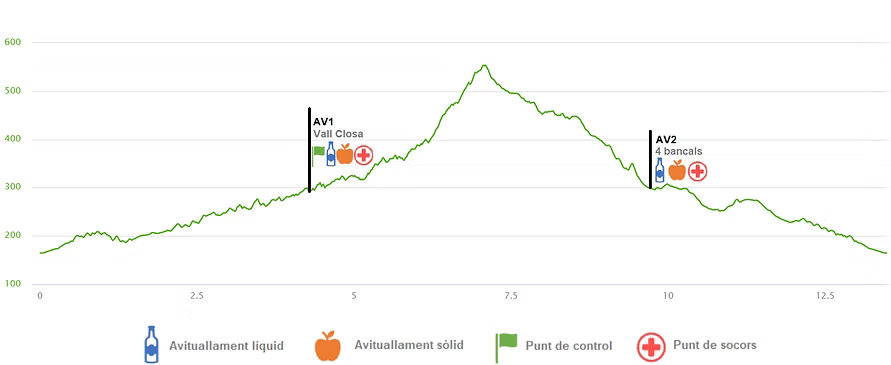

Una caminada per a tota la família · 01 de febrer de 2026
01 de febrer de 2026
09:15h
4 hores 30 minuts
Per a caminadors i caminadores a partir de 10 anys. Els menors de 18 anys han d'anar acompanyats d'un adult responsable.
22€
No federats: +5€ assegurança temporal
Inclou: Dorsal, avituallaments, assistència sanitària i obsequi per als participants.
Els participants de la Marxa podran portar gos, lligat en tot moment. L'organització declina tota responsabilitat dels danys que l'animal pugui provocar.

La sortida de la Marxa tindrà lloc dintre mateix de la Cooperativa Agrícola del Pinell de Brai (anomenada també Catedral del Vi, obra de Cèsar Martinell, deixeble de Gaudí i joia del Modernisme agrari català).
Just sortirem, creuarem la carretera N-230 c i enfilarem pel camí de les Vinyetes (o antic camí a Gandesa) uns 150 m aprox. fins trobar un encreuament a mà esquerra que ens portarà pel camí de la Serra dels Horts uns 400 metres fins a un altre encreuament a mà esquerra. Llavors, sense desviar-nos i sempre rectes, agafarem la sendera, sempre de baixada, fins al Barranc anomenat de Gandesa (uns 600 metres). Des d'aquesta baixada podrem observar, a la nostra esquerra, una de les dues bòbiles de terra refractària del Pinell.
Creuarem per sota d'un pont de la carretera i just a la dreta encararem el barranc de Gandesa tot guanyant una mica de desnivell. A la nostra esquerra ens quedarà l'altra bòbila de terra refractària. Avançarem uns 300 metres pel costat dret del barranc i canviarem al costat esquerra d'aquest tot creuant el Toll de Targa. Ja no abandonarem aquest costat fins a creuar un altre cop a la banda dreta per un altre túnel sota la carretera.
Avançarem uns 400 metres per la sendera fins que sortirem a uns bancals d'ametllers ara erms. A la nostra esquerra podrem observar el Corral de Bernabé de la Rosario. Continuarem pels bancals erms a través d'un camí uns 200 metres, on ja agafarem l'antic Camí de Gandesa ara restaurat per poder-lo aprofitar en l'itinerari de la marxa. Es tracta, potser, d'un dels camins de ferradura més antics del Pinell de Brai, doncs ja s'utilitzava molt abans de que es construís la carretera. El camí de ferradura ascendeix lleugerament tot resseguint les corbes i les peculiaritats del Barranc de Gandesa.
Durant el trajecte, es poden observar diferents indrets utilitzats durant la Batalla de l'Ebre (coves, refugis, forats excavats a la falda de la roca,...).
Després d'haver recorregut uns 1,7 km des de l'inici de la sendera del Camí de Gandesa, arribarem a la base de l'imponent Puntal de l'Os, una massa de roca d'uns 85 metres d'alçada en el seu punt més alt. Vorejarem aquesta roca i enfilarem per la sendera de la Vall Closa de Verano. En aquest punt, es troba localitzat el primer avituallament de la marxa i l'únic control de pas.
Uns metres passat l'avituallament, a la nostra dreta veurem que arrenca una sendera. L'hem de seguir. Els primers 100 metres ens quedarà una caseta a la nostra dreta, pujarem per unes feixes i trobarem una sendera enfront nostre i una altra a la nostra dreta. Hem de continuar a la dreta. A partir d'aquí, farem uns 700 metres d'un lleuger ascens per la vora del barranc fins que arribem a un antic forn de calç senyalitzat. Un cop allí, baixarem per les feixes fins a trobar la sendera que ens obliga a creuar el túnel de la carretera. Ja travessat el túnel, pujarem un petit terraplè per trobar la sendera del GR-171 o Ruta de la Pau.
Aquest tram de la Ruta de la Pau la podrem dividir en 4 trams molt diferenciats. Els primers 500 metres són gairebé plans, llavors trobem un ascens curt però pronunciat per tornar a planejar uns 200 metres abans d'encarar l'ascens més llarg. Es tracta d'uns 900 metres amb una forta ascensió que ens conduirà a sota de la Carabassa, cim molt emblemàtic de la Serra de Cavalls.
Girarem a la dreta i avançarem 1 km aprox., en descens per un tram que s'ha recuperat. Aquest tram correspon a l'antic camí de ferradura de les Petges. Llavors, planejarem uns 500 metres per la vora del cingle de la Vall Closa de Gaspar per connectar un altre cop amb la sendera de les Petges, tot girant a l'esquerra al trencall. Des d'aquí, continuarem baixant uns 900 metres fins trobar el segon avituallament de la marxa situat al camí dels Quatre Bancals.
Seguim el camí uns 100 metres i agafem la sendera/carrerada situada a la nostra dreta. Durant el trajecte, podrem veure alguna de les mines d'argila que existien al poble. Avançarem per aquí uns 500 metres per abandonar la carrerada i entrar a la sendera de l'esquerra. Seguirem per aquí, sempre en descens, uns 300 metres per sortir a un camí del cotxe. Llavors planejarem pel camí uns 400 metres. Arribarem a un encreuament de camins en forma de triangle, girarem a la dreta i passats escassos metres, agafarem la carrerada que hi ha a l'esquerra.
El mateix camí/barranc ens conduirà fins l'arribada, just davant de la Cooperativa Agrícola.